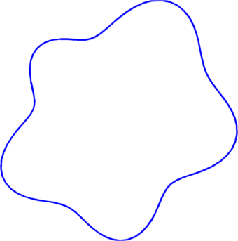

Numerical computation of the Steklov spectrum
The Steklov eigenvalues are the eigenvalues of the Dirichlet-to-Neumann operator. For a simply connected domain $\Omega$, the Steklov eigenvalues satisfy the problem $$ \begin{cases} -\Delta u =0 & \text{ in }\Omega \\ \frac{\partial u}{\partial n}= \sigma u & \text{ on }\partial \Omega \end{cases}$$
The Steklov spectrum is denoted $$ 0=\sigma_0(\Omega)\leq \sigma_1(\Omega)\leq \sigma_2(\Omega)... \to \infty.$$ We can consider optimizing the Steklov eigenvalues with respect to the shape of the domain $\Omega$ under perimeter or volume constraints. Several such results are known in the literature. First, let's note that the relevant optimization problems are those in which we need to maximize $\sigma_k$ under volume or perimeter constraint. Indeed, B. Colbois, A. Girouard and I. Polterovich proved the following bound $$ \sigma_k(\Omega) \leq c_d k^ {\frac{2}{d}}\frac{|\Omega|^{\frac{d-2}{d}}}{Per(\Omega)}.$$ This means that keeping constant volume and increasing the perimeter makes the Steklov spectrum vanish in the limit. Conversely, keeping constant perimeter and decreasing the volume has the same effect.
The well known optimization results for the Steklov spectrum are the following:
- Weinstock's inequality, which says that the disk maximizes $\sigma_1(\Omega)$ among simply connected sets with volume or perimeter constraint.
- Hersch-Payhe-Schiffer inequalities: $\sigma_k(\Omega)Per(\Omega) \leq 2k\pi$. A. Girouard and I. Polterovich proved that the inequality is sharp for $k=2$ and that the optimum is not in the class of simply connected sets.
- Another result due to Hersch-Payne-Schiffer: $$\sum_{i=1}^n \frac{1}{\sigma_k(\Omega)} \geq \sum_{i=1}^n \frac{1}{\sigma_k(B)} ,$$ where $B$ is the disk with the same volume or the same perimeter as $\Omega$.
In order to study more complicated problems involving higher Steklov eigenvalues we would like to have a way of computing the Steklov spectrum with high accuracy, in a reasonable amount of time. One way to do this is to use the method of fundamental solution. This was successfully used by P. Antunes and P. Freitas in the study of the optimization problems regarding the Dirichlet eigenvalues. The idea is to choose some exterior points as centers of radial harmonic functions, and then find a combination of them which satisfies the boundary eigenvalue condition. Of course, all the parameters (like the position of the exterior points and the evaluation points on the boundary) must be finely tuned in order to obtain the expected results.
It turns out that the situation is even simpler than in the Dirichlet case, since the fundamental solution do not depend on the eigenvalues. Thus, the computations are fast and accurate. Further details will be provided in a forthcoming article.
To illustrate the precision of the computation, I made a FreeFem++ program which computes the Steklov eigenvalues using meshes. In the table presented below you can see the comparison of the two methods in function of the number of triangles used in the mesh. You can see that the values approach the ones computed using our method.
 |
| The shape for which the eigenvalues presented in the table were computed |
| $k$ | MFS | $2096 \blacktriangle$ | $33788 \blacktriangle$ | $134898 \blacktriangle$ | $211290 \blacktriangle$ |
| $1$ | $0.712751$ | $0.714888$ | $0.712886$ | $0.712785$ | $0.712773$ |
| $2$ | $0.940247$ | $0.942837$ | $0.940411$ | $0.940288$ | $0.940274$ |
| $3$ | $1.381278$ | $1.38874$ | $1.38175 $ | $1.3814 $ | $1.38135 $ |
| $4$ | $1.443204$ | $1.45137$ | $1.44372$ | $1.44333$ | $1.44329$ |
| $5$ | $3.146037$ | $3.15592$ | $3.14665$ | $3.14619$ | $3.14614$ |
| $6$ | $3.443637$ | $3.45562$ | $3.44438$ | $3.44382$ | $3.44376$ |
| $7$ | $3.757833$ | $3.78642$ | $3.75962$ | $3.75828$ | $3.75812$ |
| $8$ | $3.922822$ | $3.95461$ | $3.92478$ | $3.92331$ | $3.92313$ |
| $9$ | $4.274362$ | $4.32906$ | $4.27774$ | $4.27521$ | $4.2749$ |
| $10$ | $4.693207$ | $4.75819$ | $4.69723$ | $4.69422$ | $4.69385$ |
Using this numerical algorithm and the shape derivative formula (see, for example this article), we can study various optimization problems regarding the Steklov spectrum.
← Back to numerical computations
Created: Dec 2014